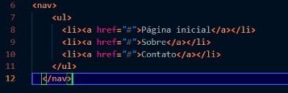

O elemento <header> representa um grupo de suporte introdutório ou navegacional
Pode conter alguns elementos de cabeçalho mas também outros elementos como um logo,
seções de cabeçalho, formulário de pesquisa, e outros.
Exemplo de uso de <header>:
Notas: O elemento <header> não é separador de conteúdo
(sectioning content), portanto, não introduz uma nova seção no outline.
Section
O elemento <section> representa uma seção genérica contida em um documento HTML, geralmente
com um título, quando não existir um elemento semântico mais específico para representá-lo.
Exemplo de uso <section>:
Notas: Cada <section> deve ser identificado, geralmente incluindo um cabeçalho
(elemento <h1>< (en-US)-<h6> (en-US)) como um filho do elemento <section>.
Article
O Elemento <article> representa uma composição independente em um documento, página, aplicação,
ou site, ou que é destinado a ser distribuido de forma independente ou reutilizável, por exemplo, em sindicação.
Este poderia ser o post de um fórum, um artigo de revista ou jornal, um post de um blog,
um comentário enviado por um usuário, um gadget ou widget interativos, ou qualquer outra forma de conteúdo independente.
Exemplo de uso <article>:
Notas: Quando um elemento <article> está aninhado, o elemento interior
representa um artigo relacionado com o elemento exterior
Nav
O Elemento <nav> representa uma seção de uma página que aponta para outras páginas
ou para outras áreas da página, ou seja, uma seção com links de navegação.
Exemplo de uso <nav>:

Notas: Um documento pode ter vários elementos <nav>, por exemplo, um para navegação no
site e outro para navegação dentro da página
Aside
O elemento <aside> representa uma seção de uma página que consiste de conteúdo
que é tangencialmente relacionado ao conteúdo do seu entorno, que poderia ser considerado separado do conteúdo.
Essas seções são, muitas vezes, representadas como barras laterais. Elas muitas vezes contem explicações laterais,
como a definição de um glossário; conteúdo vagamente relacionado, como avisos; a biografia do autor; ou,
em aplicações web, informações de perfil ou links de blogs relacionados.
Exemplo de uso <aside>:
Notas: Não use o elemento <aside> para texto entre parenteses,
pois este tipo de texto é considerado parte do fluxo principal.